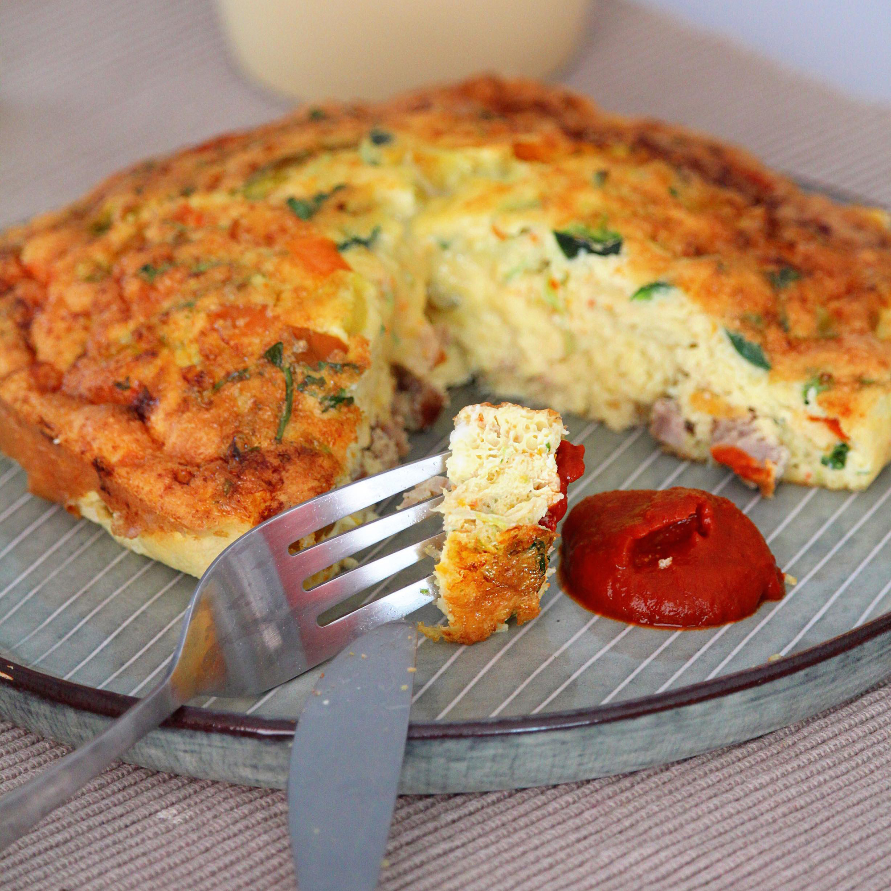

Air Fryer Breakfast Frittata

Description
Frittatas are easy to make using a cake pan that fits in the air fryer basket. Switch up the ingredients to suit your taste. If you are worried about the frittata sticking to the cake pan, line the bottom of the pan with parchment paper.
Ingredients
- ¼ pound breakfast sausage, fully cooked and crumble
- 4 eggs, lightly beaten
- ½ cup shredded Cheddar-Monterey Jack cheese blend
- 2 tablespoons red bell pepper, diced
- 1 green onion, chopped
- 1 pinch cayenne pepper (Optional)
- cooking spray
Directions
- Combine sausage, eggs, Cheddar-Monterey Jack cheese, bell pepper. onion, and cayenne in a bowl and mix to combine.
- Preheat the air fryer to 360 degrees F (180 degrees C). Spray a nonstick 6x2-inch cake pan with cooking spray.
- Place egg mixture in the prepared cake pan.
- Cook in the air fryer until frittata is set, 18 to 20 minutes.